Clover Health
Clover Care Visit
Empowering nurse practitioners to better care for members.
- Role
- Designer, operating as product design lead
- Team
- 1 PM · 3 engineers · 1 data scientist · 1 designer
- Platforms
- Web, iPad
- When
- 2015–2016
About 7-8x ROI on the increase in revenue.
Nurse practitioners stopped spending 1-2 hours every night pre-filling paper forms. Clover later IPO'd (NYSE: CLOV).
Clover Health is a unique health insurance group with the mission of driving down cost and improve real world health outcomes for real people.
Each year a Clover Care Visit is offered for free for thousands of members. Every day a small team of 10 nurse practitioners conduct personal home visits for 30-40 members. The growing demand for visits made it difficult to provide quality care for members in a timely and personal manner.
Project goal
As the Lead Product Designer, my goal was to improve the visit experience and allow nurse practitioners to see more members in a more meaningful way.
Team
The team was made up of 1 Product Manager, 3 Engineers, 1 Data Scientist, and 1 Designer.
Platforms
Web, iPad
Links
The work was referenced in two Clover engineering posts: "Why would an engineer want to work at a health insurance company?" and "Improving outcomes is hard, but here's why we know it's worth doing."
Getting started
First it was about understanding the current methodology. I interviewed Nurse Practitioners, Member Experience personnel, Data Science, and those from the Clinical Operations to better understand the true nature of the issues and where I could best help to improve them.
I spent a week in New Jersey shadowing and interviewing Nurse Practitioners on Clover Care Visits to observe and understand their workflow and how they conducted visits.
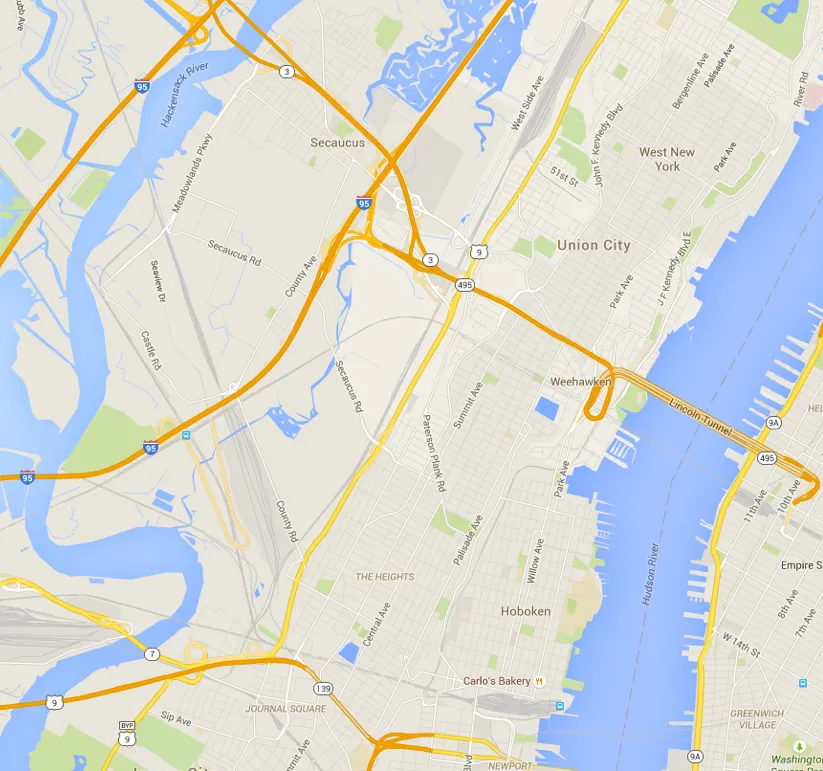
Insights
After learning from internal and field research, I put together a document of insights gathered. The highest priority was to improve the input process to enable the Nurse Practitioners to reduce effort and maximize personal time with the member. We hypothesized that by streamlining the form input process we could reduce unnecessary input time and increasing care time.
An important insight discovered from my research was that Nurse Practitioners did not have a set flow in where they start when processing the form. Taking inspiration from other streamlined (yet highly complex) form processes, it became clear that allowing Nurse Practitioners to jump between sections fluidly would greatly improve their daily workflow.
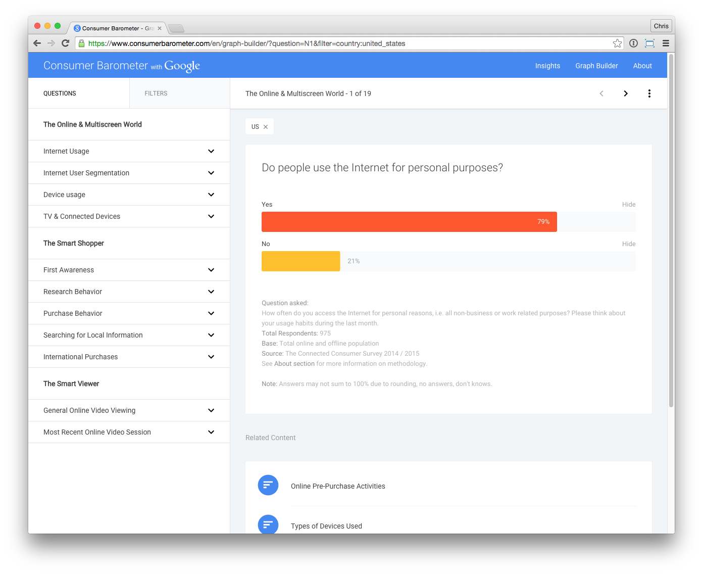
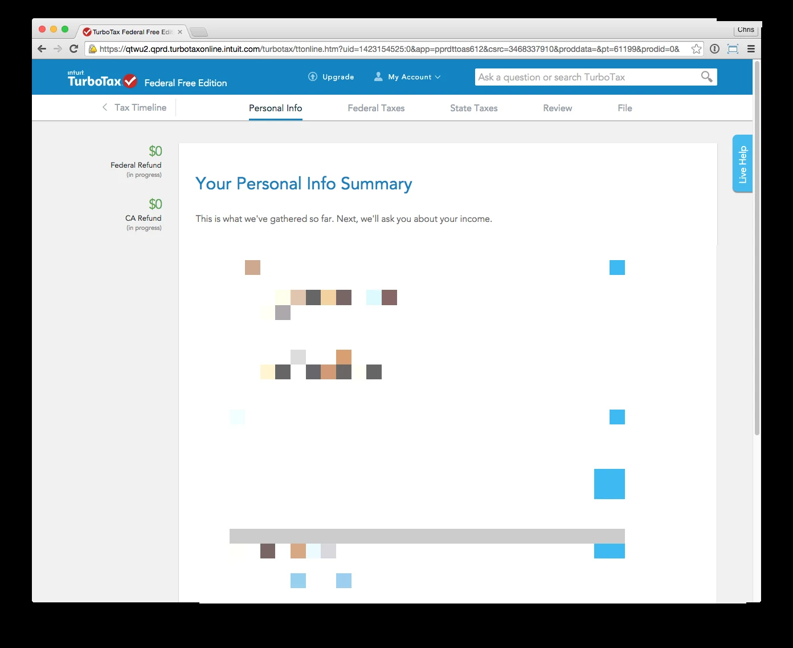
Problems uncovered
For Nurse Practitioners
Other than carrying the medical equipment, Nurse Practitioners would also be carrying stacks of paper forms for the visit.
Every night before visits, they would spend around 2 hours to pre-fill as much information as possible on paper forms.
After forms are filled out, there was redundant data entry needed required.
For Members
Visits were not often completed on time due to complexity of the process.
Visits often felt rushed and neither party felt there was enough time to address intimate questions, concerns, and issues about individualized care.
Due to the lengthy forms, more focus was focused on making sure forms were filled out and less attention on the care of the member.
For Clover
Receiving data from Nurse Practitioners would take on average 2 weeks to a month to get it in the system.
Data wasn't always accurate due to human error.
Scaling this process wasn't realistic in the long term with dealing with more friction than necessary.
The road to a solution
Sketching ideas
I spent a few days focusing exclusively on exploring as many ideas as I could and thought out every single idea on how to improve the forms. While I was doing this, I spent a lot of time sharing and discussing these ideas with my team and Nurse Practitioners.

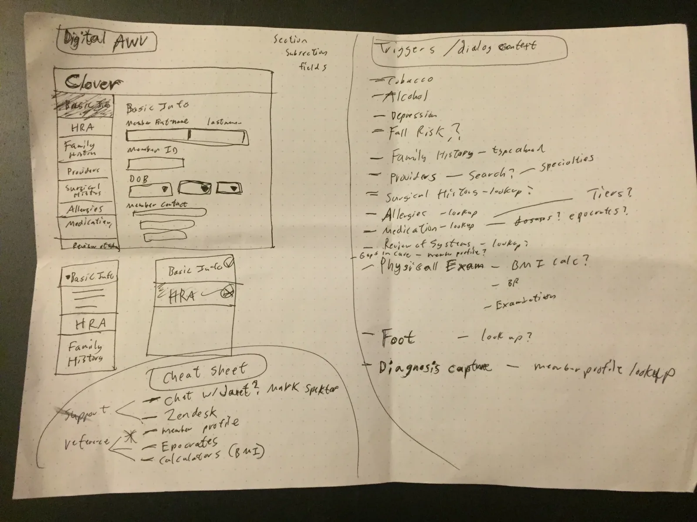
Wireframing and prototyping
In this iterative cycle, I tested ideas and prototyped different designs to validate if these were working or not. The biggest considerations I had to focus on was to make sure that this was optimized for Nurse Practitioners to spend as least time as possible to input information and to improve ease of use. I had to consider designing for responsive web (Nurse Practitioners were issued iPhone 6 Pluses and for this project, an iPad Air 2), bigger tap targets, pre-populating as much information as possible, and minimizing as much text input as possible. Click here to see the prototype.
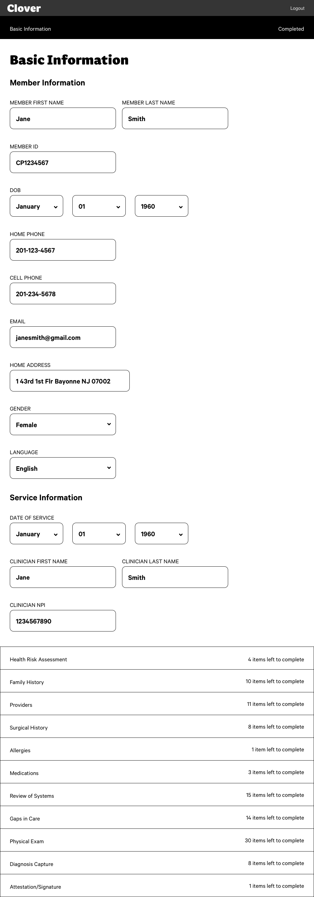
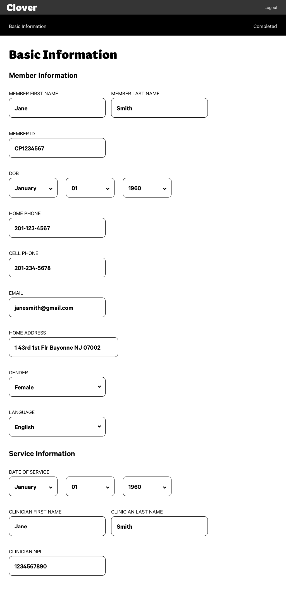
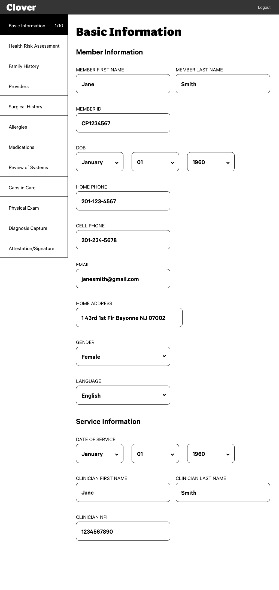

Finalizing the design
After enough feedback and critique, I started working on finishing and polishing up the visuals. We didn't have much time until we were piloting the new experience with a handful of Nurse Practitioners. I paired up and worked with engineers to give them everything they needed to implement the designs as a web app.
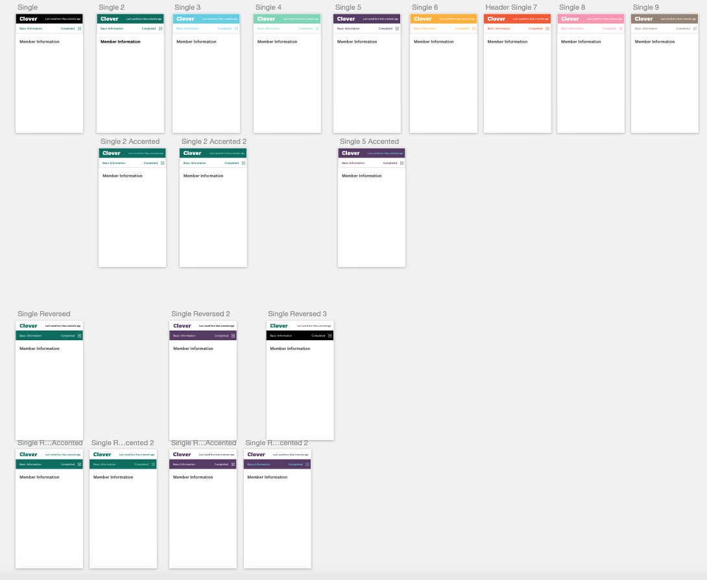
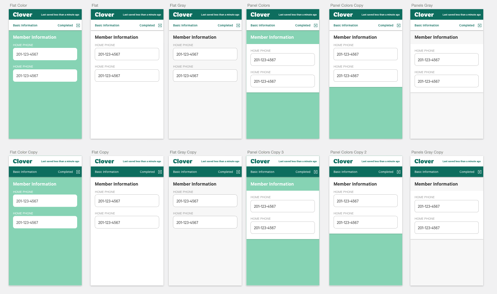
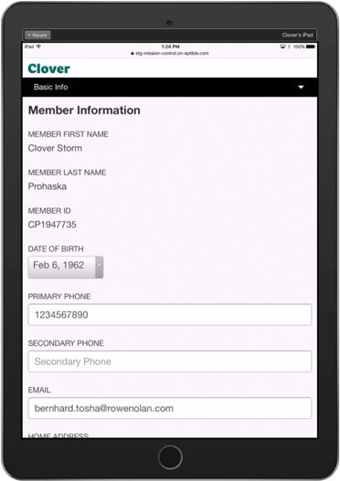
Testing and piloting the app
As a team we decided the best way to move forward with this was to pilot the app with a few Nurse Practitioners. We tested this with 3 Nurse Practitioners for a week.
Impact and results
After testing this for a week in the field, we received some positive feedback and results. Following up with the pilot, we transitioned all the nurse practitioners to this new workflow.
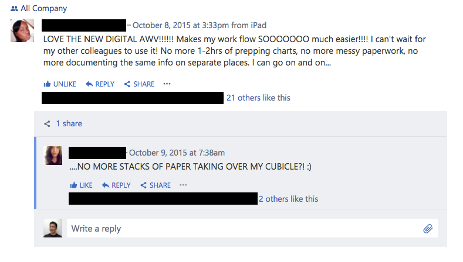
Time saved for members and nurse practitioners
Every night before visits, Nurse Practitioners no longer needed to spend 1-2 hours pre-filling forms, as forms were pre-populated with information Clover already has on a member.
Additional time in a visit to focus on the care of a member
Average visit length was reduced from 1-2 hours to 30 minutes - 1 hour due to improved form input. This led to finishing visits on time and earlier, which also opened up time for nurse practitioners for more focused care as well as additional members being seen in a day.
Improved efficiency
Due to digitizing the forms, the entire workflow of managing papers from printing to data entry reduced overhead.
Accuracy and timeliness of data
Since the method of form input is now digital, we were able to get more accurate data, from days or weeks down to hours or realtime.
Increase in revenue
About 7-8x ROI on increase in revenue.
Lessons learned
Every single thing we produce to improve efficiency or workflow makes a significant difference in improving health outcomes for the member. This project taught me the importance of not only considering your end user, but also the other users that provide and represent the company in the form of the human experience.
Next steps
After rolling out this project and measuring the results, we needed to focus on other aspects of our operations that tie into clinical operation experiences like this.
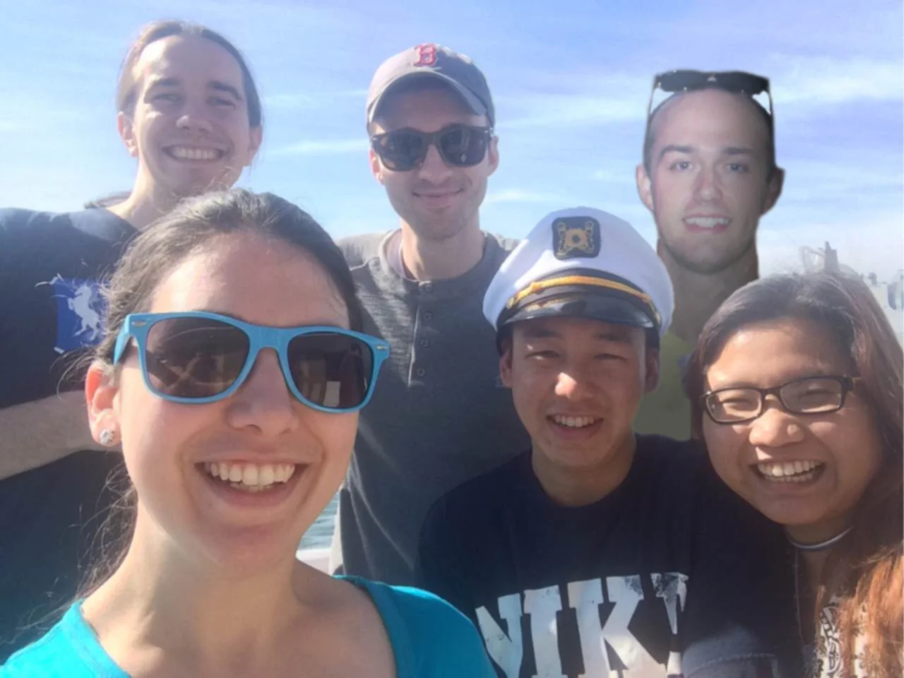
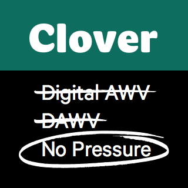